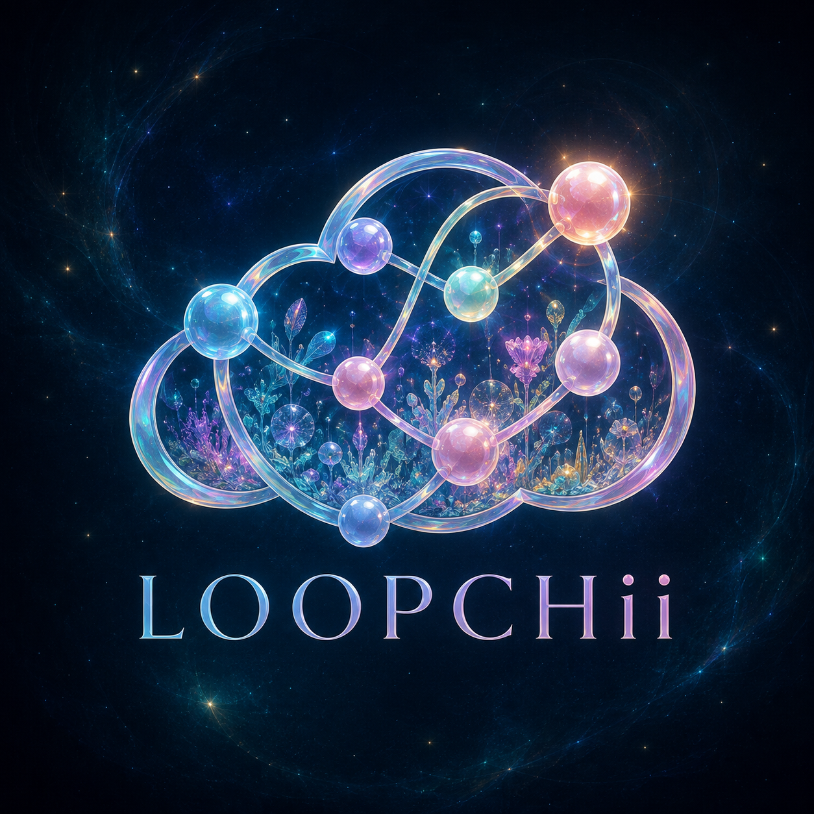

I’m a data scientist and systems builder leading LOOPCHii. I work on consequential AI and sovereign systems, where technical choices become questions of control, accountability and human experience.
Scientific habits. A builder’s curiosity.Public notebook / 01
The thread I brought with me
Before the model, there was the lab.
I started in laboratory quality control. That work taught me to care about the distance between a result and the conclusion someone draws from it.
Today, as CEO of LOOPCHii, I carry that question into AI research, software and design. A system can be technically impressive and still miss something important about the person using it.
That is why I focus on consequential AI: intelligence understood through the people, places and decisions it affects. Sovereignty makes that practical: who controls a deployment, what it depends on, and what remains possible when a connection or an assumption fails.
A little graph theory, in your hands
Pull a thread. See what holds.
Six nodes. Two groups. One vulnerable crossing. Try changing the topology.
Undirected · unweighted · illustrativeA → E · 3 hops
A → C → D → E. The crossing C–D is a bridge: remove it and these two groups separate.
The mathematics behind the motion
The route is calculated with breadth-first search on an unweighted graph. Adding B–F creates an alternative crossing. Removing C–D then leaves a path through B and F. This shows reachability, not latency, capacity, security or fault tolerance in a deployed system.
It leaves things out. Change the view. The observations stay the same.
12 synthetic observations · no real-world unitsMean 6
One average. Uneven observations.
Most values sit between 2 and 8; one reaches 17. Both facts matter, even though the mean is 6.
Look inside the arithmetic
[2, 3, 4, 4, 5, 5, 5, 6, 6, 7, 8, 17] 72 ÷ 12 = 6. This is an illustration of information lost in aggregation, not a research finding or a model evaluation.
A few places to see how I think in code, data and pictures.
Systems / time / state
What happens between the requests?
Rate limiting and stream processing put timing, coordination and state into the foreground. My public examples explore token buckets, event-time windows and asynchronous execution.
Velvet Python connects small implementations to data checks and repeatable experiments. Start with the dataset utilities; then look at what the tests expect.
Public multimodal AI experiments explore how models combine inputs. Attention, bilinear and Tucker fusion, and graph operations make the mathematical choices visible in code.
A notebook examines documented legal hallucination cases, profiles missing data and traces patterns over time. It is exploratory analysis, not a population-wide model error rate.
Pretty Vizuals brings scientific graphics, exploratory plots and geographic questions into view. Color and composition are part of making an analysis easier to inspect.
Public studies and experiments, at different stages of maturity. Their source and limitations belong in the picture.
The short version
Science taught me to look closer. Design keeps me looking.
Python is the main thread, with JavaScript, HTML/CSS and SVG for interactive work. Across the repositories: PyTorch models, statistical exploration, asynchronous systems, scientific visualization and 3D studies. Healthcare and biology keep the human stakes close.
MS · Data Science
University of Denver
BS · Integrative Biology
Oregon State University · Chemistry minor
AI in Healthcare certificate
Johns Hopkins University · 2025
Earlier work & professional background
My earlier work spans laboratory quality control and data science leadership. I now lead LOOPCHii, bringing those scientific habits into the company’s research, software and design.
Oscar Humberto Montemayor Award · Oregon State University · 2022.

Governance, close to the work
A global system meets local lives.
Where does a decision take effect? Who can challenge it? What evidence survives when the model, policy or operator changes?
Those questions connect my interest in distributed systems to human agency. I want control to be something people can exercise and accountability to leave a trace someone else can examine.
A few distinctions worth keeping
A voluntary risk framework, a legal obligation and an engineering control do different jobs. I keep jurisdiction, use case and the people affected in view before treating one as evidence for another.
NIST AI RMF offers a risk-management framework; the OECD AI Principles provide an international policy reference. These are starting points for inquiry, not certifications of this work.
I’m building a place for research, software and imagination to inform one another. Ethics lives in the choices we make along the way: what we measure, what we question, and how much agency we leave people.